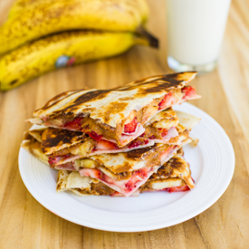

Quesadilla

Description
Quesadillas are an easy and quick meal that can be stuffed with an endless variety of vegetables and meats. They are an easy way to serve many people a completely customizable meal.
This recipe includes a few grilled vegetables, but you could add precooked meats, or switch the vegetables or cheese as desired.
Ingredients - per quesadilla
- Flour Tortillas - 1
- Shredded Mexican Cheese - 1/2 cup
- Grilled Onion and Bell Peppers - 1/2 cup diced
- Olive Oil - 1 tbsp
- Sour Cream - 1/4 cup
- Salsa - 1/4 cup
Steps
- Heat cast iron pan to medium heat and add oil.
- Place tortilla in pan and swirl around to evenly coat with oil.
- add cheese and vegetables to one half to the tortilla, leaving 1cm around edge empty.
- Fold tortilla in half and cook until nicely browned.
- Flip tortilla and continue cooking until cheese is melted and outside is nicely browned.
- Serve with sour cream and salsa.